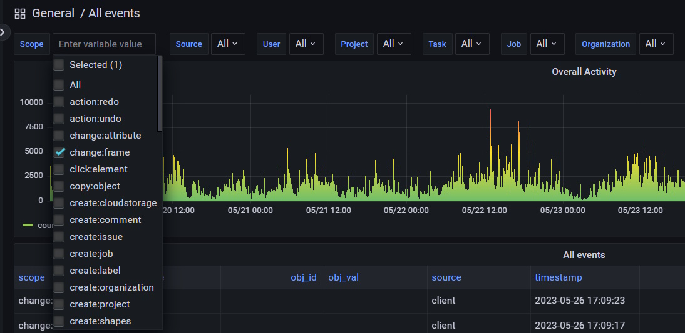
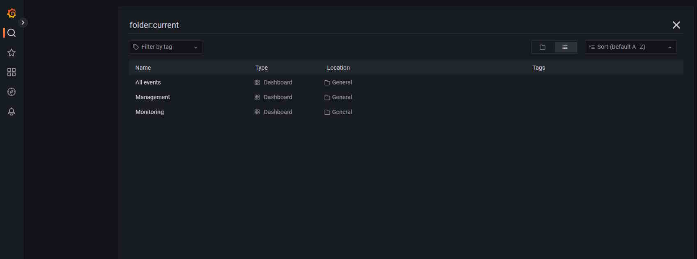
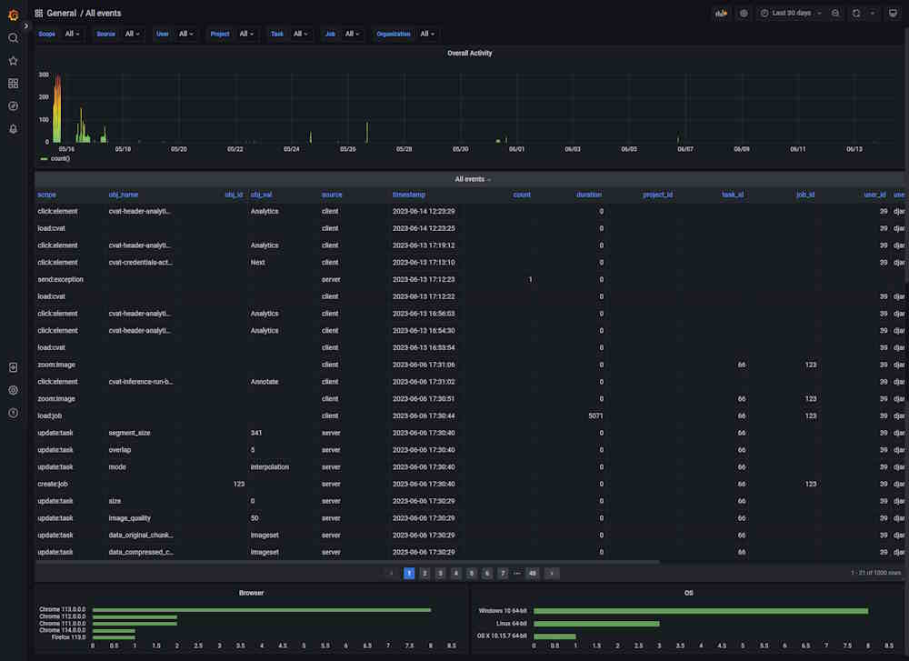
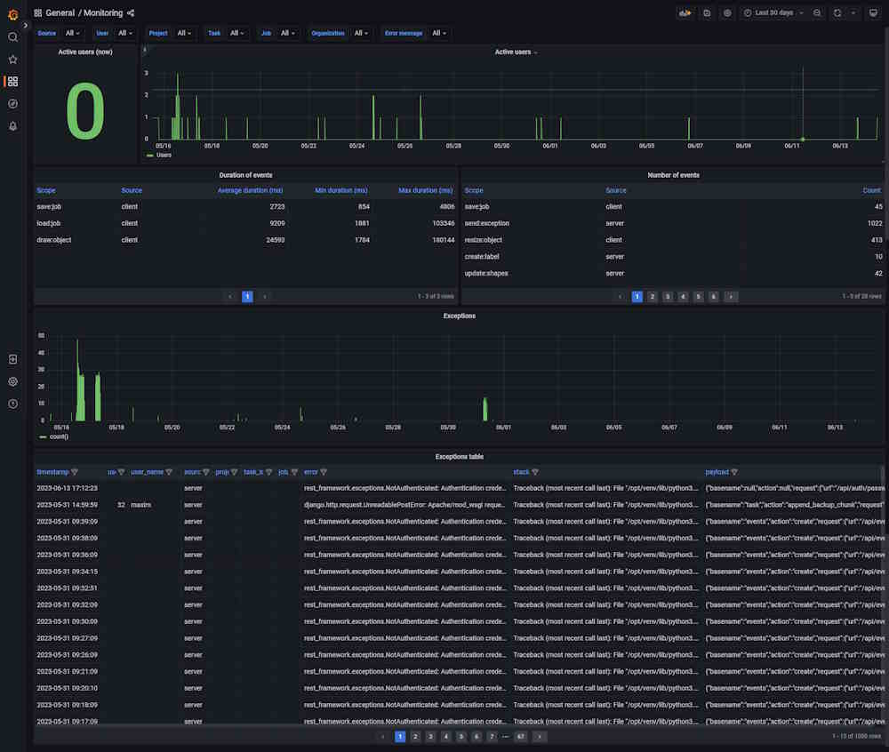
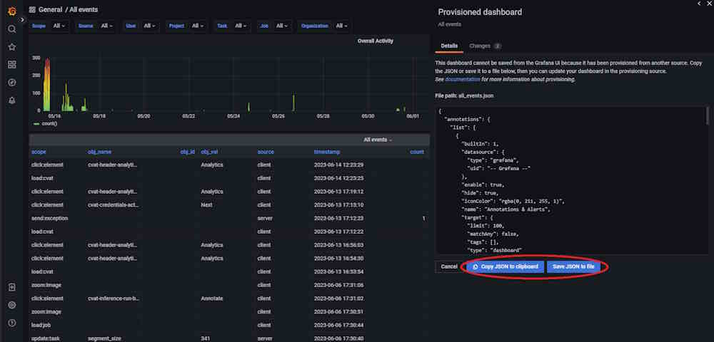

CVAT Analytics and monitoring
CVAT Analytics suite of tools is designed to track and understand users’ behavior, system performance, and for identifying potential issues in your application.
You can also visualize user activity through Grafana, and aggregate user working time by the jobs.
Gathered logs can be additionally filtered for efficient debugging.
By using analytics, you’ll gain valuable insights to optimize your system and enhance user satisfaction.
CVAT analytics are available from the top menu.

Note: CVAT analytics and monitoring are available only for on-prem solution.
See:
High-level architecture
The CVAT analytics is based on Vector, ClickHouse, and Grafana.

CVAT Analytics
CVAT and its analytics module can be set up locally, for self-hosted solution analytics are enabled by default.
For detailed instructions for CVAT installation, see Installation Guide or refer to the CVAT Course for installation videos.
All analytics-related features will be launched when you start CVAT containers with the following command:
docker compose up -d
Ports settings
If you cannot access analytics on development environnement, see Analytics Ports
Events log structure
Relational database schema with the following fields:
| Field | Description |
|---|---|
| scope | Scope of the event (e.g., zoomin:image, add:annotations, delete:image, update:assignee). |
| obj_name | Object name or None (e.g., task, job, cloudstorage, model, organization). |
| obj_id | Object identifier as in DB or None. |
| obj_val | Value for the event as string or None (e.g., frame number, number of added annotations). |
| source | Who generates the log event (e.g., server, ui). |
| timestamp | Local event time (in general for UI and server, the time is different). |
| count | How many times in the row it occurs. |
| duration | How much time does it take (it can be 0 for events without duration). |
| project_id | Project ID or None. |
| task_id | Task ID or None. |
| job_id | Job ID or None. |
| user_id | User ID or None. |
| user_name | User name or None. |
| user_email | User email or None. |
| org_id | Organization ID or None. |
| org_slug | Organization slug or None. |
| payload | JSON payload or None. Extra fields can be added to the JSON blob. |
Types of supported events
Supported events change the scope of information displayed in Grafana.

Server events:
-
create:project,update:project,delete:project -
create:task,update:task,delete:task -
create:job,update:job,delete:job -
create:organization,update:organization,delete:organization -
create:user,update:user,delete:user -
create:cloudstorage,update:cloudstorage,delete:cloudstorage -
create:issue,update:issue,delete:issue -
create:comment,update:comment,delete:comment -
create:annotations,update:annotations,delete:annotations -
create:label,update:label,delete:label -
export:dataset,import:dataset
Client events:
-
load:cvat -
load:job,save:job,restore:job -
upload:annotations -
send:exception -
send:task_info -
draw:object,paste:object,copy:object,propagate:object,drag:object,resize:object,delete:object,lock:object,merge:objects -
change:attribute -
change:label -
change:frame -
zoom:image,fit:image,rotate:image -
action:undo,action:redo -
press:shortcut -
send:debug_info -
run:annotations_action -
click:element
Request id for tracking
Note, that every response to an API request made to the
the server includes a header named X-Request-Id,
for example: X-Request-Id: 6a2b7102-c4b9-4d57-8754-5658132ba37d.
This identifier is also recorded in all server events that occur as a result of the respective request.
For example, when an operation to create a task is performed, other related entities such as labels and attributes are generated on the server in addition to the Task object.
All events associated with this operation will have the same request_id in
the payload field.
Fetching event data as CSV from the /api/events endpoint
The /api/events endpoint allows the fetching of
event data with filtering parameters such as
org_id, project_id, task_id, job_id, and user_id.
For more details, see Swagger API Documentation.
For example, to fetch all events associated with a specific job,
the following curl command can be used:
curl --user 'user:pass' https://app.cvat.ai/api/events?job_id=123
In the response, you will receive a query ID:
{ "query_id": "150cac1f-09f1-4d73-b6a5-5f47aa5d0031" }
As this process may take some time to complete,
the status of the request can be checked by
adding the query parameter query_id to the request:
curl -I --user 'user:pass' https://app.cvat.ai/api/events?job_id=123&query_id=150cac1f-09f1-4d73-b6a5-5f47aa5d0031
Upon successful creation, the server will return a 201 Created status:
HTTP/2 201
allow: GET, POST, HEAD, OPTIONS
date: Tue, 16 May 2023 13:38:42 GMT
referrer-policy: same-origin
server: Apache
vary: Accept,Origin,Cookie
x-content-type-options: nosniff
x-frame-options: DENY
x-request-id: 4631f5fa-a4f0-42a8-b77b-7426fc298a85
The CSV file can be downloaded by
adding the action=download query parameter to the request:
curl --user 'user:pass' https://app.cvat.ai/api/events?job_id=123&query_id=150cac1f-09f1-4d73-b6a5-5f47aa5d0031&action=download > /tmp/events.csv
This will download and save the file to /tmp/events.csv
on your local machine.
Dashboards
By default, three dashboards are available in CVAT.
To access them, click General, you will be forwarded to the page with available dashboards.

| Dashboard | Description |
|---|---|
| All Events | Dashboard that shows all event logs, timestamps, and source. |
| Management | Dashboard with information about user activities such as working time by job and so on. |
| Monitoring | Dashboard showing server logs, including errors. |
Dashboard: All Events
The dashboard shows all events, their timestamps, and their source.

| Element | Description |
|---|---|
| Filters | Can be used as drop-down lists or search fields. Click on the arrow to activate. |
| Overall activity | Graph that shows the overall activity by the selected filters. |
| Scope | Users’ activity, see Types of supported events. |
| obj_name | Object or item related to the Scope. |
| obj_id | Object’s id. Might be empty. |
| source | Source of the event, can be client or server. |
| timestamp | Time when the event happened. |
| count | Common field for all events, not null where it makes sense, for example, the number of saved objects in an annotation. |
| duration | Duration in milliseconds. |
| project_id | Id of the project. |
| project_id | Id of the project. |
| task_id | ID of the task. |
| job_id | ID of the job. |
There are two fields with statistics at the bottom of the dashboard, about browser and OS users use.
Click on the column name to enable a filter.
If you want to inspect the value, hover over it and click on the eye icon.
Dashboard: Management
The dashboard shows user activity.

| Element | Description |
|---|---|
| Filters | Can be used as drop-down lists or search fields. Click on the arrow to activate. |
| User activity | Graph that shows when the user was active (data and time), click on the user id below, to see the graph for the dedicated user. |
| Overall activity | Graph shows common activity for all users. |
| User | User ID. |
| Project | Project ID. Might be empty. |
| Task | Task ID. Might be empty. |
| Job | Job ID. Might be empty. |
| Working time(h) | Time spent on task in hours. |
| Activity | Number of events for each user. |
Click on the column name to enable a filter.
If you want to inspect the value, hover over it and click on the eye icon.
Dashboard: Monitoring
The dashboard shows server logs, helps handle errors, and shows user activity.

| Element | Description |
|---|---|
| Filters | Can be used as drop-down lists or search fields. Click on the arrow to activate. |
| Active users (now) | Number of active users on an instance. |
| Overall activity | Graph that shows the number of active users. |
| Exceptions | Graph that shows the number of errors that happened in the instance. |
| timestamp | Time when the error happened. |
| user_id | User ID. |
| user_name | User nickname. |
| project_id | Id of the project. Might be empty. |
| task_id | Task ID. Might be empty. |
| job_id | Job ID. Might be empty. |
| error | Error description |
| stack | Error description |
| payload | Error description |
| stack | Stack trace, which is a report of the active stack frames at a certain point in time during the execution. This information is typically used for debugging purposes to locate where an issue occurred. |
| payload | JSON that describes the entire object, which contains several properties. This data in the payload is related to an event that was created as a result of a failed API request. The payload contains information about this event. |
Click on the column name to enable a filter.
If you want to inspect the value, hover over it and click on the eye icon.
Dashboards setup
You can adjust the dashboards. To do this, click on the graph or table name and from the drop-down menu select Edit.
Adjust the query in the editor.

Example of query:
SELECT
time,
uniqExact(user_id) Users
FROM
(
SELECT
user_id,
toStartOfInterval(timestamp, INTERVAL 15 minute) as time
FROM cvat.events
WHERE
user_id IS NOT NULL
GROUP BY
user_id,
time
ORDER BY time ASC WITH FILL STEP toIntervalMinute(15)
)
GROUP BY time
ORDER BY time
Note, that by default the updated configuration will not be saved and will be reset to the default parameters after you restart the container.
To save the updated configuration, do the following:
-
Update Configuration: Start by making your desired changes in the query.
-
Apply Changes: Once you’ve made your changes, click the Apply button to ensure the changes are implemented.

-
Save Configuration: To save your applied changes, on the top of the dashboard, click the Save button.

-
Replace Configuration File: After saving, replace the existing Grafana dashboard configuration file is located at
components/analytics/grafana/dashboardswith the new JSON configuration file.
-
Restart Grafana Service: To ensure, that all changes take effect, restart the Grafana service. If you’re using Docker Compose, execute the following command:
docker compose restart cvat_grafana.
For more information, see Grafana Dashboards.
Example of use
This video demonstrates available by default CVAT analytics features.